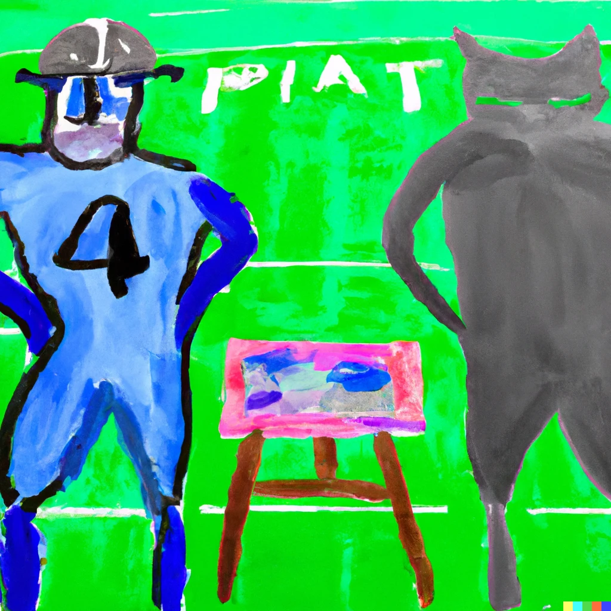
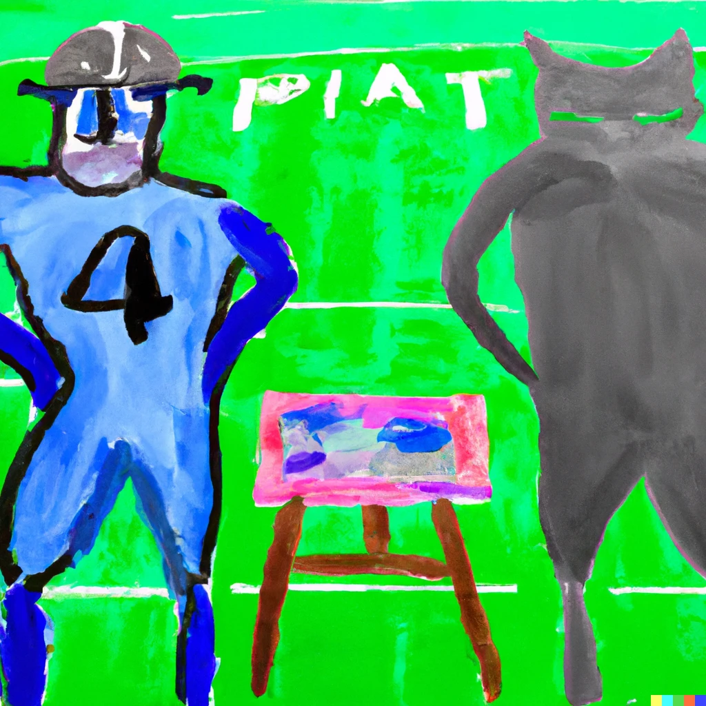
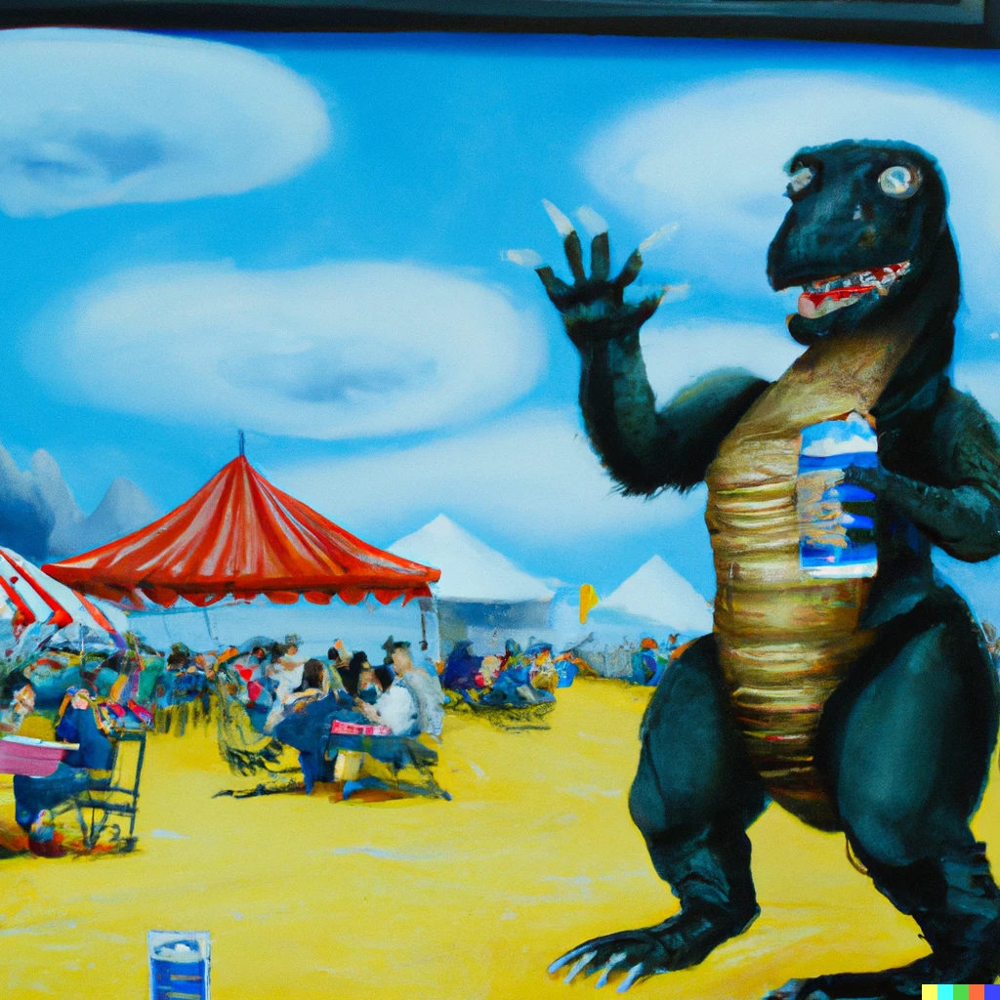
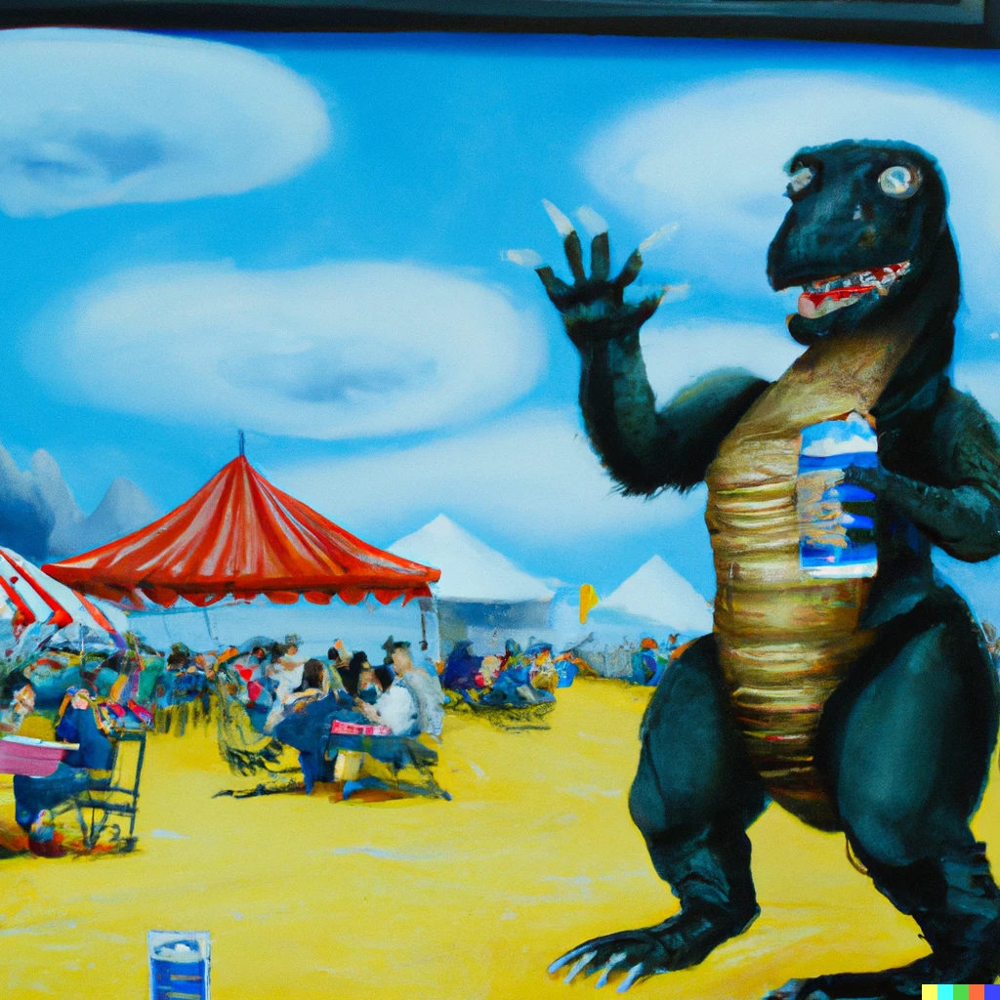

About
Prompt Map
In this project, we created a 3d interactive graph where each vertex represents a prompt that was handed to the Stable Diffusion bot during the summer of 2022. We took these prompts and projected them into latent space of (~500 dimensions), and later reduced it's dimension to 3.
As you can see,
There are a host of other issues aside from the one I described. I have only just started trying to use Webflow (because Muse is being discontinued). I designed a fairly complicated site in Muse, but what I need to do now is go back to this old website I designed in Freeway and turn it into a responsive one.
There are a host of other issues aside from the one I described. I have only just started trying to use Webflow (because Muse is being discontinued). I designed a fairly complicated site in Muse, but what I need to do now is go back to this old website I designed in Freeway and turn it into a responsive one.
 

 
